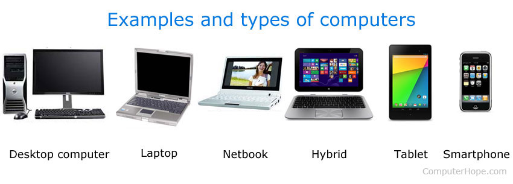

A computer is a programmable device that stores, retrieves, and processes data. The term "computer" was originally given to humans (human computers) who performed numerical calculations using mechanical calculators, such as the abacus and slide rule. The term was later given to mechanical devices as they began replacing human computers. Today's computers are electronic devices that accept data (input), process that data, produce output, and store (storage) the results (IPOS).
Below is a picture of a computer with each of the main components. You can see the desktop computer, flat-panel display, speakers, keyboard, and mouse in the picture below. We've also labeled each of the input devices and output devices.

Computers can be classified as one of three types of computers: a general-purpose computer, special-purpose computer, or specialized computer. A general-purpose computer is what most people think of when thinking about a computer and is what this page covers. A special-purpose computer is embedded in almost all electronic devices and is the most widely-used computer. This computer is designed for a specific task and is found in ATMs, cars, microwaves, TVs, the VCR, and other home electronics. See our special-purpose computer page for further information and examples. A specialized computer is like a general-purpose computer but is designed only to perform one or a few different tasks. See our specialized computer for further information and examples of these computers. When talking about a computer or a "PC," you're usually referring to a desktop computer found in a home or office. However, the lines of what makes these computers are blurring. Below are different examples of what's considered a computer today.
| Types | Useage |
|---|---|
| Personal Computer | The personal computer (PC) defines a computer designed for general use by a single person. |
| Laptop | A computer that is portable and suitable for use while travelling. |
| Handheld Computers | A handheld computer is a computer that can conveniently be stored in a pocket (of sufficient size) and used while you're holding it. |
| Server | A server is a computer or system that provides resources, data, services, or programs to other computers, known as clients, over a network |
| Mainframe | A large high-speed computer, especially one supporting numerous workstations or peripherals. |